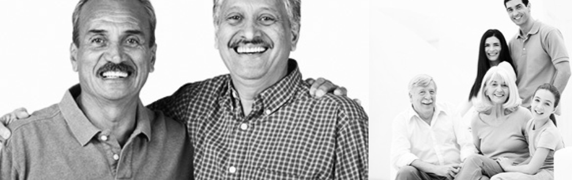

BLOG POST
THE MUSTACHE BROTHERS
It all started with two brothers, a bathroom mirror, and a shared curiosity about what would happen if we simply stopped shaving. No big plan. No deep philosophy. Just two guys wondering if they could pull off something bold. What began as a casual experiment slowly turned into something much bigger than either of us expected.
At first, it was just for fun. A few awkward stages. A few questionable shapes. A lot of laughter. But then the mustaches started filling in, taking shape, and developing personalities of their own. People noticed. Compliments started coming in. Strangers nodded in approval. That's when we realized we were onto something special.
Before long, we were trading grooming tips, testing products, and debating mustache styles like seasoned professionals. Mornings became less about rushing out the door and more about perfecting the curl, smoothing the edges, and admiring the progress. Our mustaches weren't just growing, they were evolving.
Today, The Mustache Brothers is about more than facial hair. It's about brotherhood, confidence, self-expression, and having a little fun with your personal style. We believe every great mustache tells a story, and this is ours.